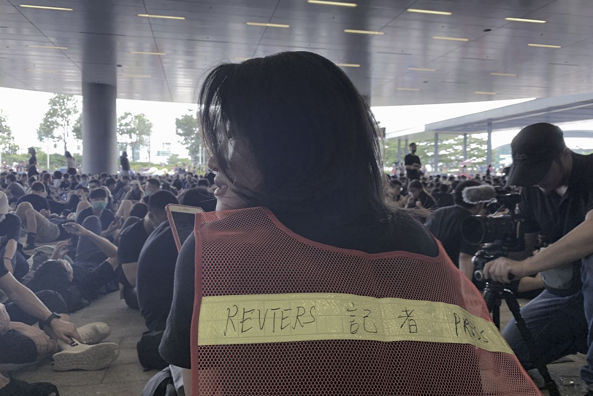
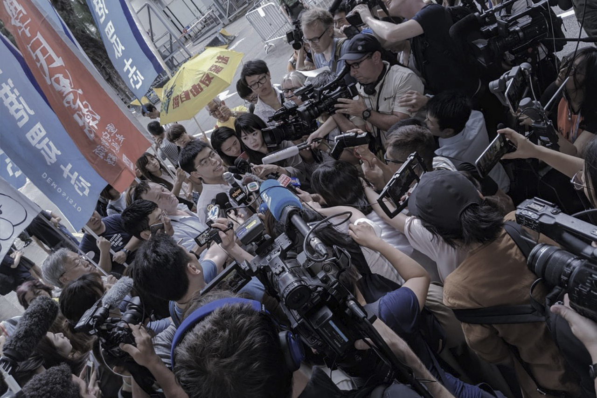

Since June 2019, protests have been staged every weekend in Hong Kong against a controversial extradition bill. Journalists on the front lines covering the protests, including conflicts between protesters and police, have been intentionally assaulted by the latter. The city’s journalists have staged several protests of their own against police to defend their rights, but the hostility from law enforcement has not abated, including frequent gender-based harassment targeting mainly women.
Thus, for example, Amy Ip, a freelance female journalist, recounted in an interview with Stand News that her name and photo had been circulated widely online by pro-establishment groups after she read a statement and pointed a flashlight at an official in a show of outrage at the treatment of journalists during a daily police press conference. When she went on to criticize specifically the use of force against media workers, the press conference was aborted. The ensuing doxxing by pro-Beijing groups blamed her for “drawing attention” (搏出位) and included references to her with the term jizhe (妓者), which forms a crude pun based on the similar pronunciation of the Chinese words for “prostitute” and “journalist.”
Again, and not surprisingly, gender-based verbal attacks are nearly always directed at women, including, in addition to jizhe, “smelly chicken” (臭雞, another term for prostitutes) and “gossipy old lady” (八婆).
During recent protests across the city, the attacks on journalists have included counselingcal as well as verbal abuse; the discussion here will deal with both forms of abuse in turn.
Jessica Lo, currently a fourth-year journalism and mass communication student at Hong Kong Shue Yan University, is among those who have commented on the personal attacks that female journalists endure based on their gender and appearance. She had an internship in NowTV from June to August and has been working part-time for the station covering local news for the past few months.
In this capacity, she was assigned to cover the rally organized by Politihk Social Strategic, a pro-Beijing organization, outside the media outlet Radio Television Hong Kong (RTHK) on August 24. The protesters were accusing RTHK of biased in its reporting on the unrest. When she received the assignment, Lo never expected that she would be attacked by the protesters.
Q: Can you briefly describe the situation of that day?
JL: I arrived outside RTHK alone around 2 pm. My cameraman was still on the way from the office, so I decided to use my mobile phone to take some footage. Before taking the videos, I donned a yellow vest with a press card to avoid any misunderstanding [about my role] by the crowds. However, some participants surrounded me and stopped me from filming.
Q: Did you encounter any problems during the protest, such as physical or verbal abuse?
JL: I was kicked two times, by a male protestor and a female protester, while I was walking. When I started to film with my mobile phone, someone struck the phone and I was almost knocked to the ground. I also endured verbal attacks. Some protesters pointed at me, almost touching my eyes with their fingers. Most of the protesters there were male, and the majority of the journalists there were female, and almost all of the female journalists were blamed and insulted. They used gender-based language to attack us.
Q: Did you think of this as sexual harassment?
JL: Yes, I considered it sexual harassment. They used sexual words to attack us. Although I haven’t experienced any physical sexual harassment, I know that other female journalists have.
Q: What did you feel when you heard those [i.e., abusive] words?
JL: I have to admit that I felt very scared, but I knew it was useless to argue with them. I was frustrated because of the man’s vehement actions at that moment. It was difficult for me to hear what he said at the time. When I went back home and watched the playback, then I clearly understood what he had said... I must admit that I have sore feelings after watching those clips. It is hard to stay calm in the face of all the insults.
Q: How did you cope with your sore feelings? Did you cry?
JL: No, I did not cry. But I felt upset. Interviewing people is my job, and I just want to report the truth. Why do they treat me like that? Maybe I’m still young and fresh. I know some journalists may have gotten used to it, but I really cannot stand still and remain silent.
Q: Do you think that male journalists face less sexual abuse than female journalists?
JL: Yes. I think male journalists face fewer sexual insults because those words have no impact on them. They are usually attacked because of their profession. I believe that female journalists face more personal attacks because of gender and appearance.
Q: Did you report [the harassment] to NowTV immediately? What did they do to help you?
JL: Yes, NowTV sent another crew to help us later. At same time, NowTV reported what happened to the police. But you know, it doesn’t help much at all. I don’t think anyone will be arrested in this case.
Q: Do you think that society discriminates against female journalists?
JL: Kind of. The image of male journalists is that they are smart and good at numbers, so they are usually responsible for financial news. However, there are also advantages to be a female journalist. For example, we are always regarded as caring and good at communicating with people. Investigative reporting and feature stories are usually assigned to us.
Q: What can your agency do to help? Is there pre- or post-protest assistance for journalists?
JL: I think the media agency can provide psychological support for full-time journalists in dealing with the stress. They provide training to all journalists in preparation [for covering the protests], but it is mainly focused on practical skills.
Regarding the source of the sources of the harassment that Lo and other journalists have suffered, in a recent survey of members of the press by Hong Kong Baptist University, 38% of respondents said that they had been targeted with verbal abuse by the police, 23% by citizen onlookers, 20% by protesters, 7% by other reporters, and 1% by gangs in the North Point area. Some 51% felt that the abuse was clearly gender-based and 55% said that it had affected their mood at work.
Vimvam Tong spent two-and-a-half months (June to mid-August 2019) on the front lines of most of the protests that took place in this period as a journalism intern for Reuters. Tong reported feeling “liberated” when she was given the opportunity to leave this high-intensity environment and move to Denmark as an exchange student.

Vimvam Tong waited for interview at the demostrationsite. (Credit: Vimvam Tong)
Q：Would you recount your most memorable interview experience?
VT: That would be June 30, a Sunday. I covered both a pro-democratic protest near the Legislative Council and a pro-police rally in Tamar Park, which is not far away. I was fortunate to have the chance to interview individuals on both sides, especially at the pro-police rally.
Most of the police-supporters were middle-aged and very suspicious of journalists. They accused us of biased news reporting and challenged our professionalism, particularly that of female journalists. They blamed us for being mouthpieces for the mob and ignoring the violent behavior of those demonstrating against the police, but of course this is not true.
Q: In addition to the questioning of the professionalism of journalists, was there any gender-based discrimination against them?
VT: I didn't encounter any insults targeting women at that event [i.e., on June 30] explicitly. However, in a later assignment covering the Reclaim Sheung Shui demonstration, we were subjected to some unwarranted scolding by the police. Still, remember, some other female journalists have indicated that the police have had physical contact with them, and they had to warn the police on the spot that this behavior constituted sexual harassment.
In fact, female reporters are perceived to be more easily controlled. The police more frequently ordered female reporters to stop reporting from the front lines, while my male colleagues received less attention from them. This may have been because the majority believed that “girls on the frontline need to be taken care of by men.”
Q: You said that your male colleagues received less attention from the police; can you elaborate on this?
VT: Well, as an intern, I didn’t really have much experience reporting on the protests. When I was covering a demonstration near the Hong Kong Liaison Office, the police raised a warning flag to indicate that they were about to release tear gas. I realized that I had forgotten to bring my gear, including a gas mask, so I approached the police for help. However, they told me to leave, to run to a safe place. I felt that their attitude was like they were trying to tell me “this is no place for a little girl.”
It’s hard to say whether the reporters are assigned based on gender. We have one camerawoman, she has been on the frontline for a long time. For me, it seemed hard to be assigned to the very front line because of my limited experience. Additionally, I didn't have training in such hostile environment formerly, so that's why my editor concerned about the safety of me.
Q: How did this nearly three-month experience affect your mood?
VT: No doubt I was traumatized. For example, every time I see hundreds of police dressed in riot gear knocking their shields loudly and shouting, “go away,” I feel like they are going to push me from my back. But, being a journalist, I should stay on the front lines. The verbal attack also had a psychological impact on me.
Q: Can these traumas be healed? Do you think that your news agency should help?
VT: Over the past few months, the political atmosphere in Hong Kong has been very repressive, and this has impacted our working environment. There’s distrust between the two sides [i.e., police and demonstrators]. If any even slightly biased content is reported by a journalist, the side that is disadvantaged will be all abuzz.
I think the best way to solve the psychological problem is by yourself. The news agency I work for also provided counseling services if we wanted them. At the same time, my editor-in-chief also talked to me frequently and showed her concern about my physical and mental health. If you feel uncomfortable continuing the assignments [she told me], you are free to go.
In the aforementioned survey, 41% of respondents said that editors assigned journalists to cover the protests based on gender; 14% perceived that gender discrimination was an issue in the newsroom; and 24% felt that female journalists endured gender discrimination in Hong Kong society generally.
“Journalists on the front lines understand that they may be hurt at any time, which is another kind of pressure that we are exposed to.”—Bethanie Ho
“We became more sensitive after covering the protests... We are very alert when we smell tear gas or hear a sudden loud voice, even when we’re not on the job,” said Bethanie Ho, a journalist working in Ming Pao who graduated from Hong Kong Baptist University three years ago.
Covering the protests has subjected journalists to various forms of mental pressure and evoked in them mixed emotions. Ho was on the front lines on June 12 at the beginning of particularly intense clashes between protesters and police. “After that day, we needed to go back to finish our news story with a calm and professional attitude amid the chaotic situation. It was difficult to keep my emotions in check that night after I finished my story.”
“Journalists on the front lines understand that they may be hurt at any time, which is another kind of pressure that we are exposed to,” Ho added. “For myself, my greatest anxiety was on June 17. I witnessed a change in the mood of the movement and felt powerless.” It was on that day that a man committed politically-motivated suicide by jumping from Pacific Place in the Admiralty district.
In the survey, as the figure shows, 89% of the respondents agreed that news agencies should provide journalists with emotional and psychological counseling.
Asked whether journalists need such counseling, Ho and a colleague, Alpha Chan, answered in the affirmative.
“Journalists’ mental health is something that should receive considerable attention, especially since journalists constantly witness things that normal people don’t,” said the latter, also a journalist working in Ming Pao. She suggested that journalists may feel anxious after being assigned to accidents, especially severe ones like the 2016 Amoycan Industrial Centre fire, the crash of a double-decker bus in Tai Po in 2018, or the ongoing protests.
These two journalists’ news agency had arranged for discussion and sharing of experiences, inviting psychology professors to support the journalists. However, not every journalist has the resources to afford these kinds of services, and Lo suggested that all news agencies should provide mental assistance to their journalists, especially the full-time and front-line staff.
Anna Kam, a year fourth-year international journalism student at Hong Kong Baptist University, however, said that “If mental assistance is provided, I would leave it to other journalists, as I didn’t suffer from serious trauma after reporting on the protests. I do believe that all front-line journalists need [access to] counseling services.” She had worked as a freelance journalist for four international media agencies and said that none had provided mental wellness support or counseling.
Turning again to the survey, among respondents who reported physical attacks, 45% attributed the abuse to the police, 18% to demonstrators, 12% to citizen onlookers, and 8% to fellow journalists. Further, 16% described the abuse as gender-based, and 57% said that it had impacted their emotions at work.
When reporters encounter physical abuse on the job, including sexual harassment, some existing laws may help to protect them. Thus, for instance, Hong Kong’s Sex Discrimination Ordinance (SDO) protects individuals from sexual harassment and victimization in prescribed areas, including employment.
“Journalists and practitioners in the media industry have the same protection from sexual harassment and sex discrimination under the SDO [as other workers],” asserted Dorothy Sam, the Corporate Communications Manager of Equal Opportunity Commission (EOC) in a written reply.
The EOC handles complaints from individuals who feel that they have been discriminated against in any of the prescribed areas. According to Sam, the commission endeavors to resolve cases that have been deemed actionable after examination of all relevant information through reconciliation so that the disputing parties reach a settlement. Its assistance includes legal advice.
Sam pointed out that, because the figures for complaints made to the EOC are not categorized by industry, no specific figures for complaints from journalists are currently available. In any case, though, there is some doubt regarding whether journalists covering the protests are in fact free to send their complaints to the commission. Thus one journalist, who spoke on the condition that her identity would not be revealed, pointed out that the EOC seldom followed up on any of its investigations or addressed gender issues proactively. It is therefore unclear whether the gender discrimination that female journalists are facing predates the recent wave of protests or whether it is in fact common throughout the media industry.

The social status of Hong Kong journalists has been improving. (Credit: Vimvam Tong)
“From gendered disparities in wage income to the levels of participation in the labor market, job opportunities remain unequal for men and women in today’s Hong Kong,” said Susanne Yuk-ping Choi, a professor of social studies and expert on gender issues at Hong Kong Chinese University. “Sexual harassment has emerged across industries, mostly involving gender bias and power imbalances.”
Choi added that the harassment faced by journalists may be particularly complicated because it occurs not only within news agencies but also during interviews. It is quite challenging for journalists to complain about or report such abuse at the scene because of the limited information that they have about such abusers.
Whatever their merits Hong Kong’s laws on sexual harassment—the aforementioned SDO enforced by the EOC—have significant shortcomings. Thus Choi observed, “If sexual harassment, such as verbal harassment, is related to civil conflict, the only way to complain is to go to the EOC. The problem is that attacks [on reporters] by interviewees are difficult to attribute unless the exact perpetrator is caught on the spot. Besides, the current ordinance does not necessarily cover sexual harassment by interviewees. The laws do regulate the employer in that, if an employee is sexually harassed, the employer shares legal responsibility.”
Choi felt that the social status of Hong Kong journalists has been improving significantly during the political disturbances but that news agencies should provide more specialized training to their employees for dealing with harassment in such situations. At the same time, she affirmed, intra-company psychological counseling is also very significant. “Many news agencies actually fail to establish special mechanisms to handle such questions because the ordinance does not stipulate that they must do so,” she observed.
“You are not allowed to do that assignment—not because of your experience but because you were born female.”—Experienced journalists
A female journalist, who does not want to disclose her name, tells about how female journalists work in her former workplace, a TV news station.
Another female journalist who did not wish to disclose her name described the situation for herself and her female colleagues at a TV news station where she used to work. “Female journalists are not allowed to cover ‘dangerous’ situations. For example, during a typhoon, they are not allowed to go out because they look weak. This policy was implemented after the TV station received complaints that it was mistreating female journalists by sending them out into extreme weather. This urge to protect women may be understandable, but a journalist’s job is to reveal the truth and disclose secrets to the public, and female journalists just like male ones desire opportunities to report on various kinds of news, even from potentially dangerous scenes. Thus, the desire to protect women in this way reflects not merely concern for their safety but also a form of discrimination against them.”
“Gender dominance happens in the newsroom and outside the newsroom,” the anonymous reporter went on. “Not to mention the fact that the staff on the management level is usually male and that gender issues also arise while journalists are engaged in reporting. In fact, most of the journalists in Hong Kong are female, and their assignments usually pair them with a male cameraman. The two cooperate in deciding how to report on the news. Now think about it; will an experienced male cameraman listen to the ideas of a young and less experienced female journalist? This combination [of media professionals] is common in reality. Women dominate the industry in terms of numbers, but the power that they exercise is not commensurate.”
Julie Posetti, an Australian journalist who studies cyber-harassment, has investigated the attacks on female journalists in Hong Kong. Her research confirms that the abuse of these women often targets their physical appearance and gender , including such insults as “slut,” “bitch,” and “prostitute.”
According to research conducted by DEMOS in Britain in 2014, female journalists and TV news presenters receive roughly three times as much abuse as their male counterparts.